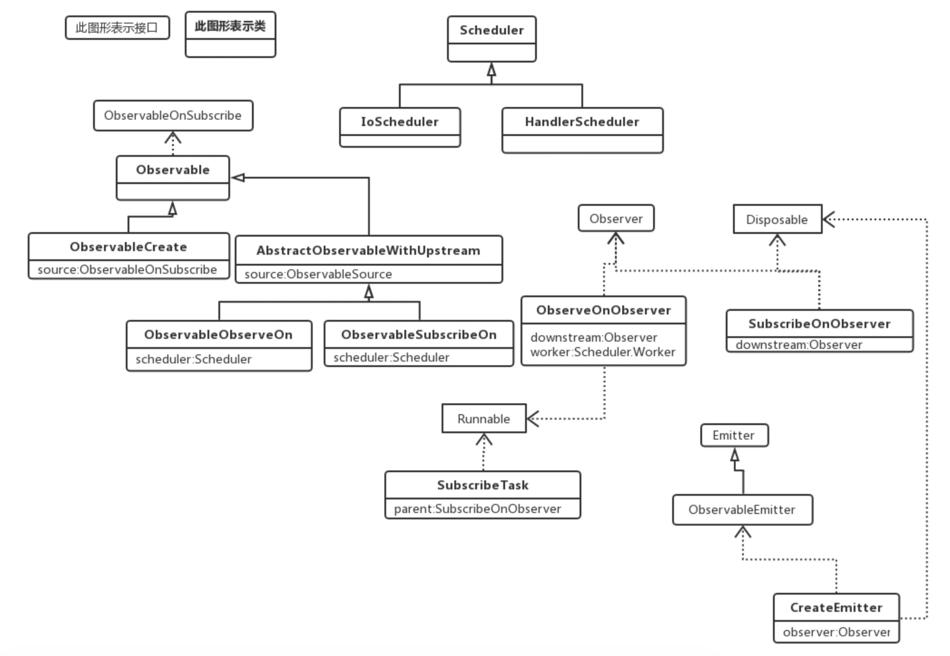

1. 前言
RxJava2的操作符有许多，全部分析太花时间，也没有必要，这里只分析几个核心的操作符。
2. 基本使用
Observable
.create(new ObservableOnSubscribe<String>() {
@Override
public void subscribe(ObservableEmitter<String> emitter) {
Log.d(TAG, "subscribe: Thread=" + Thread.currentThread().getName());
Log.d(TAG, "subscribe: a");
emitter.onNext("a");
Log.d(TAG, "subscribe: b");
emitter.onNext("b");
}
})
.subscribeOn(Schedulers.io())
.observeOn(AndroidSchedulers.mainThread())
.subscribe(new Observer<String>() {
Disposable d;
@Override
public void onSubscribe(Disposable d) {
this.d = d;
Log.d(TAG, "onSubscribe: Thread=" + Thread.currentThread().getName());
}
@Override
public void onNext(String s) {
Log.d(TAG, "onNext: Thread=" + Thread.currentThread().getName());
Log.d(TAG, "onNext: " + s);
}
@Override
public void onError(Throwable e) {
Log.d(TAG, "onError: Thread=" + Thread.currentThread().getName());
}
@Override
public void onComplete() {
Log.d(TAG, "onComplete: Thread=" + Thread.currentThread().getName());
}
});
Log:
onSubscribe: Thread=main
subscribe: Thread=RxCachedThreadScheduler-1
subscribe: a
subscribe: b
onNext: Thread=main
onNext: a
onNext: Thread=main
onNext: b
3. create
public static <T> Observable<T> create(ObservableOnSubscribe<T> source) {
ObjectHelper.requireNonNull(source, "source is null");
return RxJavaPlugins.onAssembly(new ObservableCreate<T>(source));
}
使用
create((ObservableOnSubscribe<String>) emitter -> {
emitter.onNext("a");
emitter.onNext("b");
emitter.onNext("c");
emitter.onNext("d");
Log.d(TAG, "rxJava: " + Thread.currentThread().getName());
})
create方法需要传入一个被观察者。
然后新建了一个ObservableCreate对象，看一下ObservableCreate类。
3.1. ObservableCreate
ObservableCreate的类结构
public final class ObservableCreate<T> extends Observable<T>
ObservableCreate继承了Observable，而Observable实现了ObservableSource接口，也就是在create方法中传入的参数类型。
public abstract class Observable<T> implements ObservableSource<T>
ObservableCreate主要是封装了传入的ObservableSource对象。
再来看看create中RxJavaPlugins.onAssembly方法
public static <T> Observable<T> onAssembly(@NonNull Observable<T> source) {
//这里没有设置onObservableAssembly，一般为null。
Function<? super Observable, ? extends Observable> f = onObservableAssembly;
if (f != null) {
return apply(f, source);
}
//直接返回刚刚创建的ObservableCreate对象。
return source;
}
create方法比较简单，就是将传入的ObservableSource对象进行封装，准备下一步的操作。
4. 线程调度
4.1. 被观察者的线程调度
public final Observable<T> subscribeOn(Scheduler scheduler) {
ObjectHelper.requireNonNull(scheduler, "scheduler is null");
return RxJavaPlugins.onAssembly(new ObservableSubscribeOn<T>(this, scheduler));
}
subscribeOn是Observable中的方法，这里的this是上面create返回的Observable，具体实现是ObservableCreate。这里将Scheduler和create返回的Observable封装进ObservableSubscribeOn。
看一下ObservableSubscribeOn类。
public final class ObservableSubscribeOn<T> extends AbstractObservableWithUpstream<T, T> {
final Scheduler scheduler;
public ObservableSubscribeOn(ObservableSource<T> source, Scheduler scheduler) {
super(source);
this.scheduler = scheduler;
}
//。。。
}
ObservableSubscribeOn继承了AbstractObservableWithUpstream：
abstract class AbstractObservableWithUpstream<T, U> extends Observable<U> implements HasUpstreamObservableSource<T> {
protected final ObservableSource<T> source;
}
AbstractObservableWithUpstream继承了Observable，并且内部持有create返回的ObservableSource的引用。
4.2. 观察者的线程调度
AndroidSchedulers.mainThread()
public static Scheduler mainThread() {
return RxAndroidPlugins.onMainThreadScheduler(MAIN_THREAD);
}
private static final Scheduler MAIN_THREAD = RxAndroidPlugins.initMainThreadScheduler(
new Callable<Scheduler>() {
@Override public Scheduler call() throws Exception {
return MainHolder.DEFAULT;
}
});
private static final class MainHolder {
static final Scheduler DEFAULT
= new HandlerScheduler(new Handler(Looper.getMainLooper()), false);
}
这里传入的Scheduler的具体类型是HandlerScheduler。
再来看看observeOn方法
public final Observable<T> observeOn(Scheduler scheduler) {
return observeOn(scheduler, false, bufferSize());
}
public final Observable<T> observeOn(Scheduler scheduler, boolean delayError, int bufferSize) {
ObjectHelper.requireNonNull(scheduler, "scheduler is null");
ObjectHelper.verifyPositive(bufferSize, "bufferSize");
return RxJavaPlugins.onAssembly(new ObservableObserveOn<T>(this, scheduler, delayError, bufferSize));
}
逻辑和subscribeOn一样，就是将刚刚返回的Observable和传入的Scheduler进行封装。
5. subscribe
public final void subscribe(Observer<? super T> observer) {
//....
try {
observer = RxJavaPlugins.onSubscribe(this, observer);
//...
subscribeActual(observer);
} //...
}
RxJavaPlugins.onSubscribe方法
public static <T> Observer<? super T> onSubscribe(@NonNull Observable<T> source, @NonNull Observer<? super T> observer) {
BiFunction<? super Observable, ? super Observer, ? extends Observer> f = onObservableSubscribe;
if (f != null) {
return apply(f, source, observer);
}
return observer;
}
由于没有设置onObservableSubscribe，这里直接返回observer。
5.1. ObservableObserveOn.subscribeActual
subscribeActual是Observable中的抽象方法，具体实现就是最近操作返回的Observable对象，也就是observeOn返回的Observable，具体实现是ObservableObserveOn类。
ObservableObserveOn类的subscribeActual方法。
protected void subscribeActual(Observer<? super T> observer) {
if (scheduler instanceof TrampolineScheduler) {
source.subscribe(observer);
} else {
Scheduler.Worker w = scheduler.createWorker();
source.subscribe(new ObserveOnObserver<T>(observer, w, delayError, bufferSize));
}
}
observeOn传入的是HandlerScheduler，所以看else块。
HandlerScheduler的createWorker方法
public Worker createWorker() {
return new HandlerWorker(handler, async);
}
创建完Worker后，将observer和刚刚创建的Worker封装，然后调用source的subscribe方法。
这里的source是ObservableObserveOn的父类AbstractObservableWithUpstream中的source，其具体实现是observeOn上一个操作（也就是subscribeOn）返回的ObservableSubscribeOn。ObservableSubscribeOn和其父类AbstractObservableWithUpstream并没有重写subscribe方法，所以最终调用的是Observable中的subscribe方法。
5.2. Observable.subscribe
public final void subscribe(Observer<? super T> observer) {
//...
try {
observer = RxJavaPlugins.onSubscribe(this, observer);
//....
subscribeActual(observer);
}//...
}
绕了一大圈，又调用了一次subscribe，但这里的subscribeActual方法的调用者是ObservableSubscribeOn了
5.3. ObservableSubscribeOn.subscribeActual
public void subscribeActual(final Observer<? super T> observer) {
//封装，其实现了Observer和Disposable接口
final SubscribeOnObserver<T> parent = new SubscribeOnObserver<T>(observer);
//调用onSubscribe方法。
observer.onSubscribe(parent);
//最后将刚刚创建的SubscribeOnObserver对象封装进SubscribeTask
parent.setDisposable(scheduler.scheduleDirect(new SubscribeTask(parent)));
}
5.3.1. SubscribeTask
final class SubscribeTask implements Runnable {
private final SubscribeOnObserver<T> parent;
SubscribeTask(SubscribeOnObserver<T> parent) {
this.parent = parent;
}
@Override
public void run() {
source.subscribe(parent);
}
}
当SubscribeTask在线程池中运行的时候，会调用其run方法，在run方法中，会执行subscribe，这个source是create返回的对象。
再看一下scheduler.scheduleDirect方法。
5.4. Scheduler.scheduleDirect
这里的Scheduler实际类型是IoScheduler。
public Disposable scheduleDirect(@NonNull Runnable run) {
return scheduleDirect(run, 0L, TimeUnit.NANOSECONDS);
}
public Disposable scheduleDirect(@NonNull Runnable run, long delay, @NonNull TimeUnit unit) {
//返回EventLoopWorker
final Worker w = createWorker();
//将之前的SubscribeTask进行封装
final Runnable decoratedRun = RxJavaPlugins.onSchedule(run);
DisposeTask task = new DisposeTask(decoratedRun, w);
//调用EventLoopWorker的schedule方法
w.schedule(task, delay, unit);
return task;
}
5.4.1. IoScheduler.createWorker
public Worker createWorker() {
return new EventLoopWorker(pool.get());
}
5.4.2. EventLoopWorker.schedule
public Disposable schedule(@NonNull Runnable action, long delayTime, @NonNull TimeUnit unit) {
if (tasks.isDisposed()) {
return EmptyDisposable.INSTANCE;
}
return threadWorker.scheduleActual(action, delayTime, unit, tasks);
}
threadWorker.scheduleActual
public ScheduledRunnable scheduleActual(final Runnable run, long delayTime, @NonNull TimeUnit unit, @Nullable DisposableContainer parent) {
Runnable decoratedRun = RxJavaPlugins.onSchedule(run);
ScheduledRunnable sr = new ScheduledRunnable(decoratedRun, parent);
//....
Future<?> f;
try {
//检测延迟
if (delayTime <= 0) {
f = executor.submit((Callable<Object>)sr);
} else {
f = executor.schedule((Callable<Object>)sr, delayTime, unit);
}
sr.setFuture(f);
} //....
return sr;
}
可以看到这里任务被放入线程池（executor，具体是ScheduledExecutorService）中进行执行。这样SubscribeTask的run方法被调用了，再来看看SubscribeTask的run方法：
public void run() {
source.subscribe(parent);
}
source是create返回的ObservableCreate对象。ObservableCreate没有重写subscribe方法，所以执行的是Observable中的subscribe方法。再来看看Observable的subscribe方法：
public final void subscribe(Observer<? super T> observer) {
//...
try {
observer = RxJavaPlugins.onSubscribe(this, observer);
//....
subscribeActual(observer);
}//...
}
这里的subscribeActual具体实现是ObservableCreate：
protected void subscribeActual(Observer<? super T> observer) {
CreateEmitter<T> parent = new CreateEmitter<T>(observer);
//这里的observer就是用户创建的observer。见基本使用的log，第一行注释就被打印了。
observer.onSubscribe(parent);
try {
//这里调用用户创建的ObservableOnSubscribe的subscribe方法，基本使用的log的2、3、4行注释被打印了。
source.subscribe(parent);
} //...
}
用户创建的ObservableOnSubscribe：
new ObservableOnSubscribe<String>() {
@Override
public void subscribe(ObservableEmitter<String> emitter) {
Log.d(TAG, "subscribe: Thread=" + Thread.currentThread().getName());
Log.d(TAG, "subscribe: a");
emitter.onNext("a");
Log.d(TAG, "subscribe: b");
emitter.onNext("b");
}
}
会调用ObservableEmitter的onNext方法来发布消息，看一下ObservableEmitter的onNext，具体实现是CreateEmitter：
public void onNext(T t) {
if (t == null) {
onError(new NullPointerException("onNext called with null. Null values are generally not allowed in 2.x operators and sources."));
return;
}
if (!isDisposed()) {
//ObserveOnObserver类型的observer
observer.onNext(t);
}
}
如果没有调用disposed方法，那么会执行ObserveOnObserver的onNext方法：
public void onNext(T t) {
if (done) {
return;
}
if (sourceMode != QueueDisposable.ASYNC) {
queue.offer(t);
}
schedule();
}
void schedule() {
if (getAndIncrement() == 0) {
//worker是HandlerWorker类型
worker.schedule(this);
}
}
public Disposable schedule(Runnable run, long delay, TimeUnit unit) {
if (run == null) throw new NullPointerException("run == null");
if (unit == null) throw new NullPointerException("unit == null");
if (disposed) {
return Disposables.disposed();
}
run = RxJavaPlugins.onSchedule(run);
ScheduledRunnable scheduled = new ScheduledRunnable(handler, run);
Message message = Message.obtain(handler, scheduled);
message.obj = this; // Used as token for batch disposal of this worker's runnables.
if (async) {
message.setAsynchronous(true);
}
handler.sendMessageDelayed(message, unit.toMillis(delay));
// Re-check disposed state for removing in case we were racing a call to dispose().
if (disposed) {
handler.removeCallbacks(scheduled);
return Disposables.disposed();
}
return scheduled;
}
这里最终还是交给Handler来完成。在Android中切换回主线程是Handler，这里也是这么使用的。这里基本使用的log的最后几行关于onNext的log也就被打印了。
6. 类关系图

7. 总结
以上分析的很乱，以后会进行整理，这里进行简单的总结。
RxJava2总体上是使用了观察者模式，从方法名和类名就能看出来。
数据传递是从上往下的，这里用了装饰模式，所以在分析源码的时候能不断地看到包装的逻辑。
以被观察者为例 这里ObservableOnSubscribe是抽象组件。 用户传入的匿名内部类是具体组件，也就是被装饰的真正对象。 Observable是抽象装饰者，不过其内部没有持有真正对象的引用，真正对象的引用放在了子类中。 ObservableCreate、ObservableObserveOn、ObservableSubscribeOn是具体的装饰者，真正对象的引用放在了这些类中。
订阅是从下往上的，当调用subscribe方法后会不断向上通知包装的真正的对象的subscribe（也就是用户创建的被观察者对象）方法。
发布消息是从上往下的，当执行了emitter.onNext方法，层层调用包装的onNext方法，最后执行用户创建的观察者对象的onNext方法。
工作线程是通过线程池来实现。线程切换是通过Handler来实现。将逻辑封装成Runnable对象来执行。